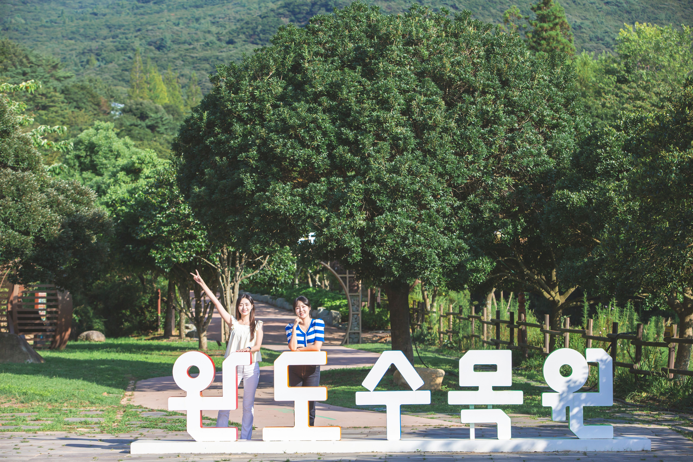
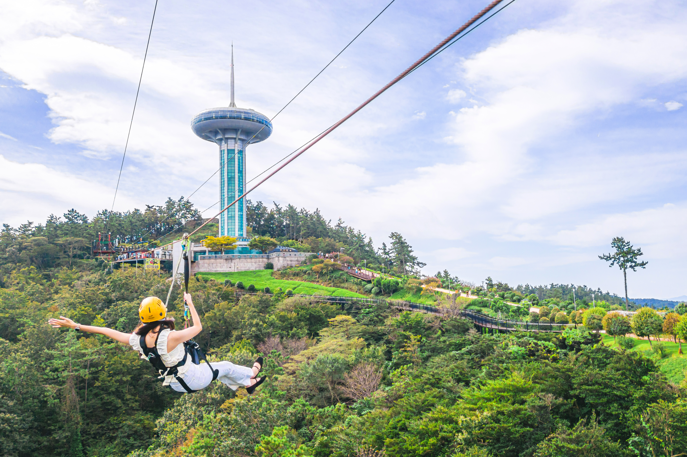
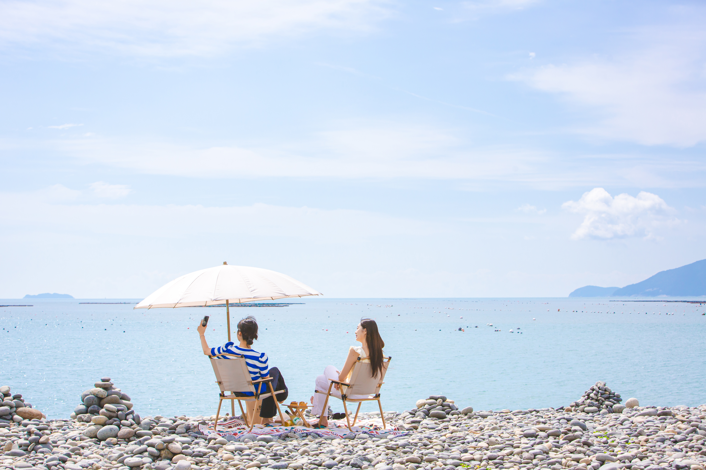
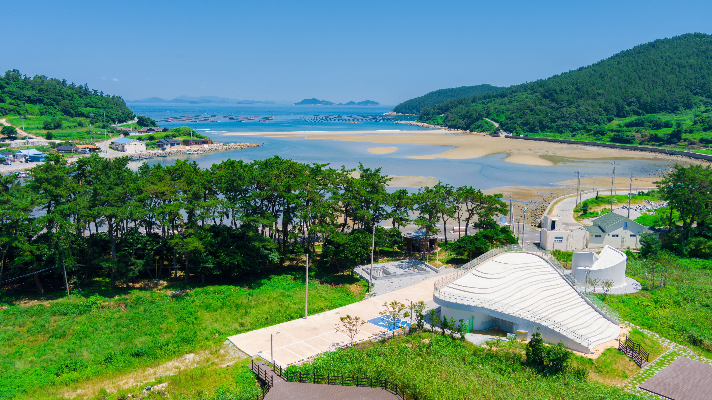
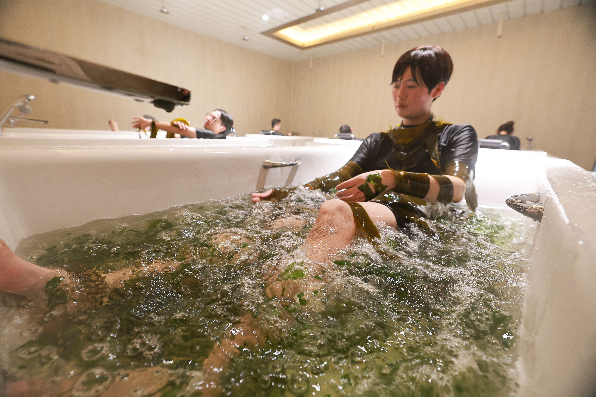

청해포구 촬영지
장보고의 이야기를 담은 <해신>을 시작으로 다양한 영화, 드라마의 촬영지가 되었던 곳입니다.
바다와 어우러진 옛 포구, 세트장을 거닐며 완도의 역사와 풍경을 만나보세요.
(청해포구 촬영지 관광은 3박 4일 / 5박 6일 코스에 포함되어 있습니다.)
코스에 따라 완도를 대표하는 관광지를 돌아보는
완도 지역관광 및 치유프로그램을 포함하고 있습니다.
코스별 방문지가 다르니, 반드시 포함 내용을 확인해 주시기 바랍니다.

자연치유의 힐링숲, 사계절 푸르른 난대림이 펼쳐진 완도수목원에서
일상에서 잠시 벗어나 자연과 마주하는 시간을 가져봅니다.
(완도 수목원 관광은 2박 3일 코스에 포함되어 있습니다.)

완도의 아름다운 자연과 다도해의 멋진 경치를 조망할 수 있는 완도의 대표 관광지입니다.
(완도타워 관광은 2박 4일 / 3박 4일 / 5박 6일 코스에 포함되어 있습니다.)

둥글게 다듬어진 갯돌들이 해안에 층층히 쌓여 만들어진 독특한 갯돌 해변입니다.
오랜 세월 파도에 다듬어진 갯돌이 아홉 개의 계단처럼 펼쳐진 곳.
울창한 숲과 바다가 만나는 길을 따라 천천히 걸으며 완도의 자연을 온전히 느껴보세요.
(정도리 구계등 관광은 2박 3일 / 3박 4일 / 5박 6일 코스에 포함되어 있습니다.)
장보고의 이야기를 담은 <해신>을 시작으로 다양한 영화, 드라마의 촬영지가 되었던 곳입니다.
바다와 어우러진 옛 포구, 세트장을 거닐며 완도의 역사와 풍경을 만나보세요.
(청해포구 촬영지 관광은 3박 4일 / 5박 6일 코스에 포함되어 있습니다.)

서편제의 촬영장소로도 유명한 청산도.
한국관광공사, CNN 선정 한국의 아름답고 가봐야 할 곳으로 꼽힐 만큼
여유의 아름다움으로 가득한 섬입니다.
(청산도 관광은 3박 4일 / 5박 6일 코스에 포함되어 있습니다.)

숲과 바다를 함께 활용하는 복합 치유 프로그램에 참여합니다.
(숲 치유 프로그램은 3박 4일 / 5박 6일 코스에 포함되어 있습니다.)

AI Website Maker